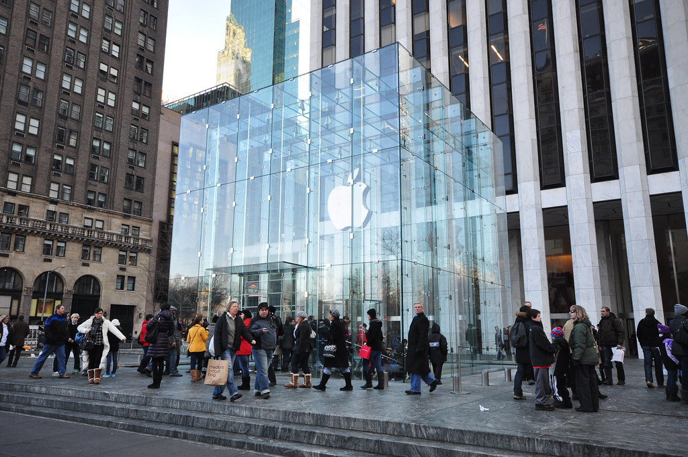

Apple's revenue rose 15.1% to $478.8 billion as iPhone sales grew 21%

Apple's revenue grew 15.1% to $478.8 billion in fiscal 2026, its fastest growth since fiscal 2021, as iPhone sales rose 21%. Gross margin widened to 48.8% and net income rose 18.0% to $132.2 billion, even though research and development spending grew by almost a third. Capital spending fell, so free cash flow rose 37.8% to $136.1 billion. Apple released the results after the market closed on November 2; its shares fell 1.9% on November 3, while the S&P 500 fund rose 0.3%.
iPhone led the fastest growth in five years
Revenue growth picked up to 15.1%, after 2.0% in fiscal 2024 and 6.4% in fiscal 2025. Revenue had fallen 2.8% in fiscal 2023. Since fiscal 2019 it has grown 1.8 times, from $260.2 billion, a compound rate of 9.1% a year.
iPhone sales rose 21% to $254.1 billion, or 53% of revenue. The 10-K says the increase came from higher sales of Pro models. Services grew 13% to $123.3 billion; Apple said advertising and cloud services drove most of that. Mac sales grew 12.5% to $37.9 billion, on laptops. iPad and the wearables, home and accessories category were about flat.
By region, Greater China grew fastest: its sales rose 28% to $82.4 billion, mainly on iPhone and Mac, after a 3.8% fall in fiscal 2025. Apple said a stronger renminbi helped. The Americas, Apple's largest region, grew 11.1% to $198.1 billion.
Margins widened as research spending jumped
Gross margin rose for a seventh year in a row, to 48.8% from 37.8% in fiscal 2019. Cost of sales grew 11.0%, against revenue growth of 15.1%. The gross margin on products rose to 39.3% from 36.8%, which the 10-K puts down mainly to product mix and refunds of tariffs, partly offset by higher costs, including memory. The margin on services rose to 76.2% from 75.4%.
Research and development spending rose 32.5% to $45.8 billion, or 9.6% of revenue, up from 8.3%. Apple said the increase came mainly from higher infrastructure costs, including investments in artificial intelligence, and from headcount. Operating income still grew 18.8% to $158.1 billion, and operating margin rose 1.0 points to 33.0%.
Net income rose 18.0%, a little slower than operating income, because the effective tax rate rose to 17.0% from 15.6%. Diluted earnings per share grew faster, by 20.4% to $8.98, because the diluted share count fell 1.9%.
Capital spending fell and free cash flow rose
Cash from operations rose 30.2% to $145.1 billion. Payments for property and equipment fell 28.9% to $9.0 billion, the lowest since fiscal 2020 and 1.9% of revenue. Free cash flow reached $136.1 billion, 2.3 times the fiscal 2019 figure. As a share of revenue it was 28.4%, up from 23.7% in fiscal 2025.
Debt fell and equity rose by half
Total debt fell 18.8% during the year to $80.1 billion, from a peak of $124.7 billion in September 2021. Cash and short-term investments were $56.7 billion, so debt exceeded them by $23.4 billion, against $44.0 billion a year earlier. Apple also holds long-term marketable securities; counting them, its cash, cash equivalents and marketable securities totaled $136.9 billion.
Shareholders' equity rose 52.0% to $112.1 billion. Net income was larger than what Apple paid out in buybacks and dividends. Inventories rose to $14.5 billion from $5.7 billion, and almost all of the increase was in components, which grew to $10.4 billion from $2.1 billion. The 10-K says Apple is facing supply constraints and rising costs for key components, including memory and storage.
Payouts took a smaller share of free cash flow
Apple spent $86.4 billion buying back shares, 4.8% less than in fiscal 2025, and paid $15.7 billion in dividends. Together that is $102.1 billion, or 75% of free cash flow, the lowest share of the eight years covered here. In fiscal 2025 payouts were 107% of free cash flow. In April 2026 Apple announced a new buyback program of up to $100 billion and raised its quarterly dividend from $0.26 to $0.27 per share.
The diluted share count fell to 14,720 million, from 18,596 million in fiscal 2019.
Eight years of figures
Per-share figures and share counts are adjusted for Apple's four-for-one stock split in August 2020. Segment, category, inventory and gross-margin-by-type figures come from the 10-K, not the structured data.
Sources: Form 10-K (SEC EDGAR) · Form 10-K filing index · EDGAR company facts for Apple · Apple fiscal 2026 fourth-quarter earnings release (Exhibit 99.1). More figures for Apple are on its company page.